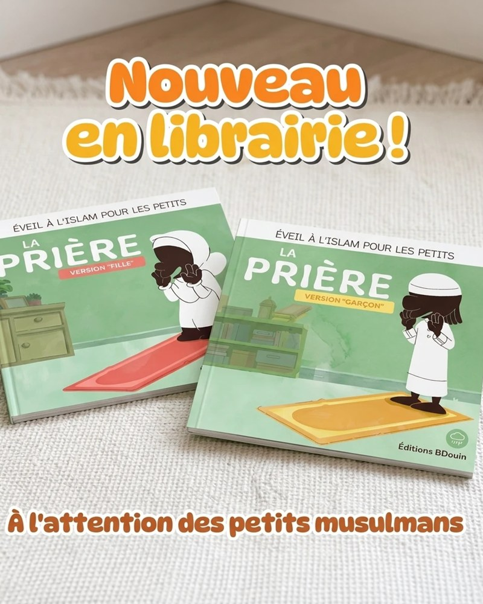
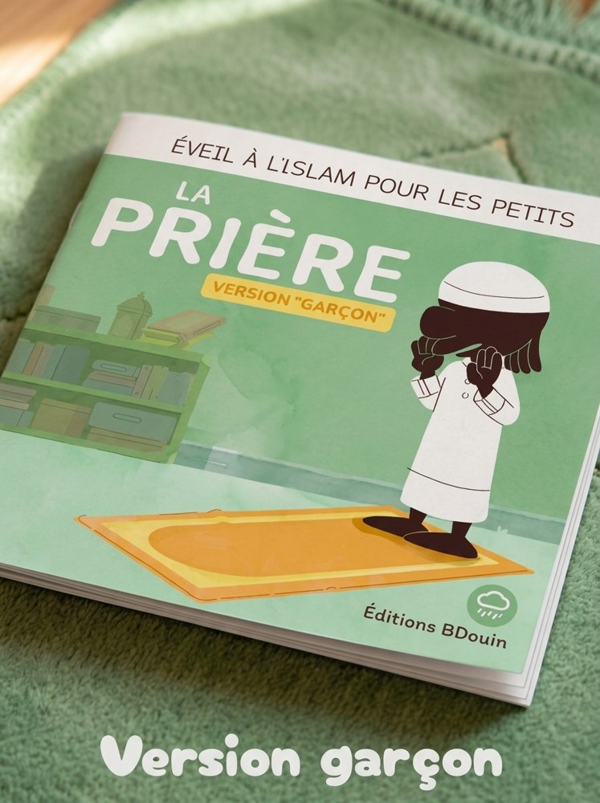
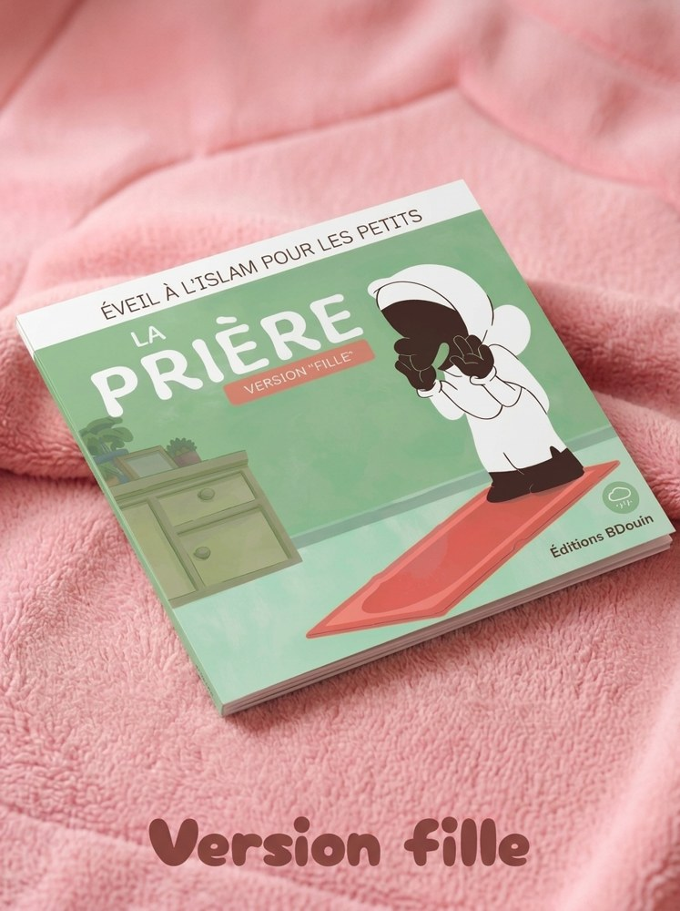
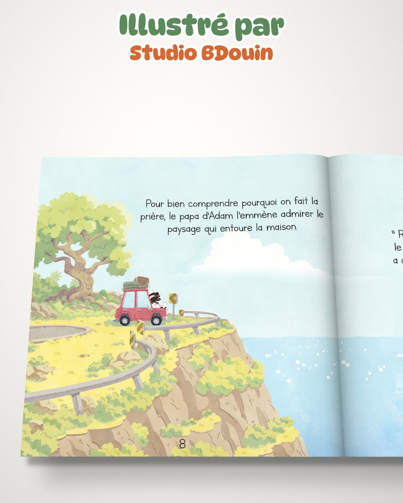
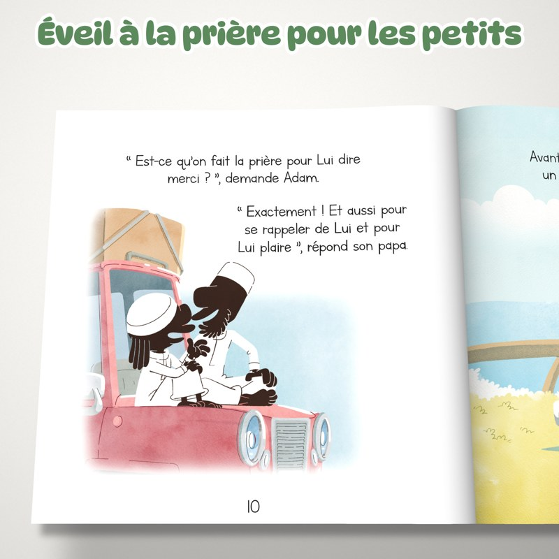
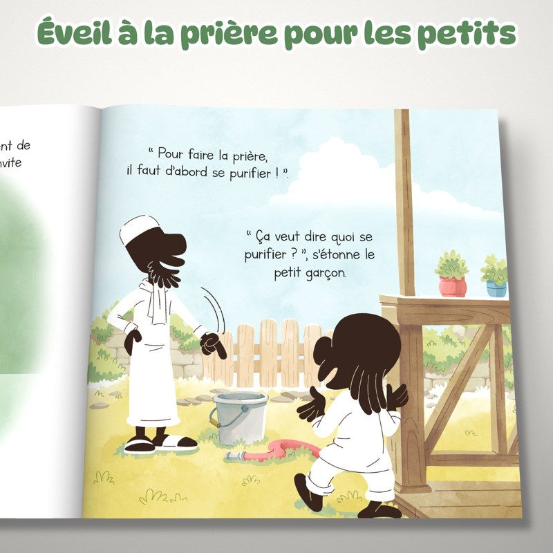
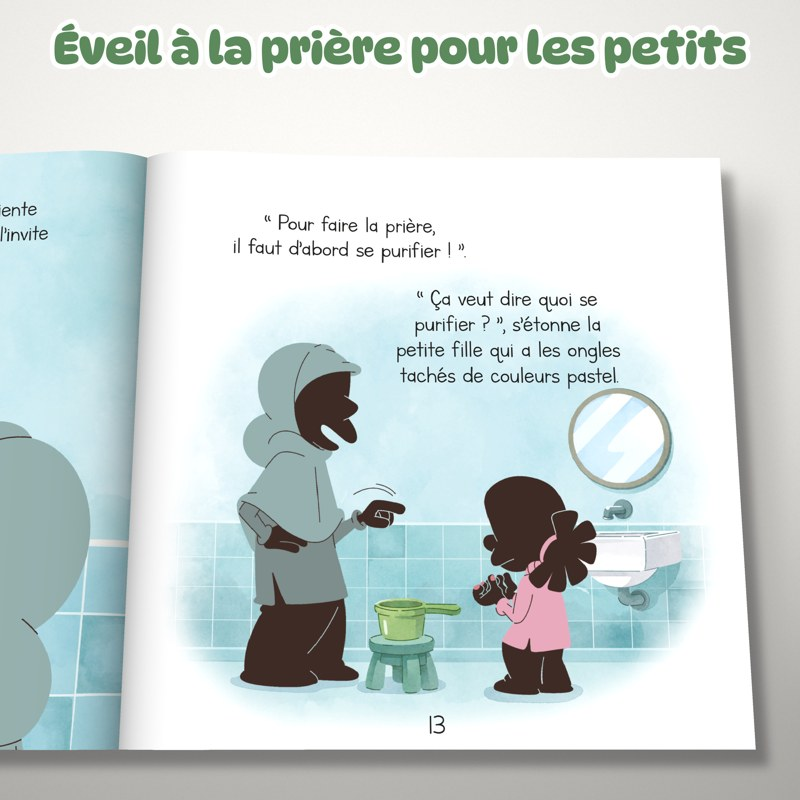
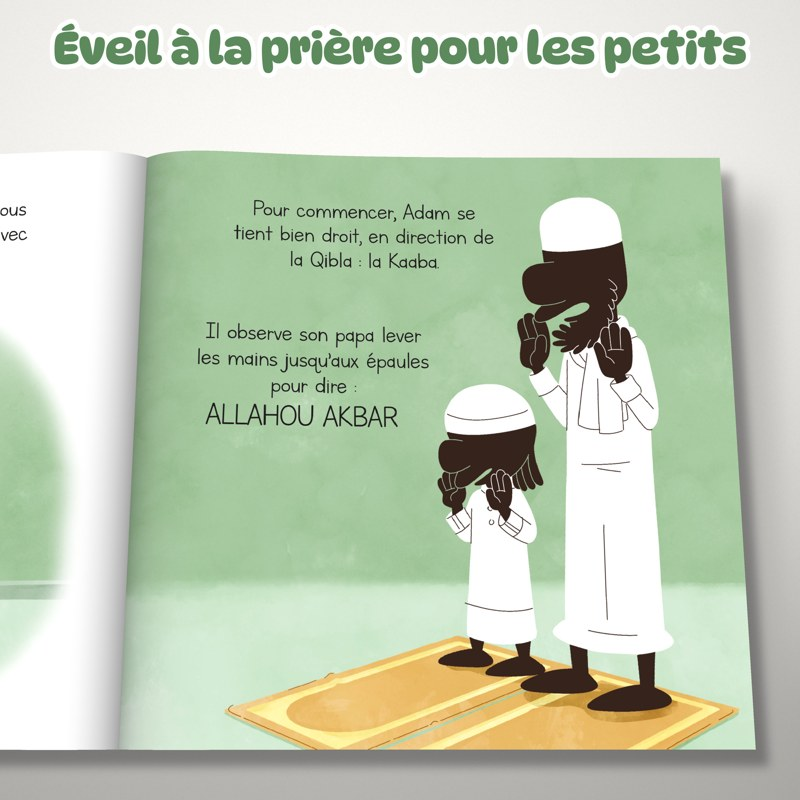
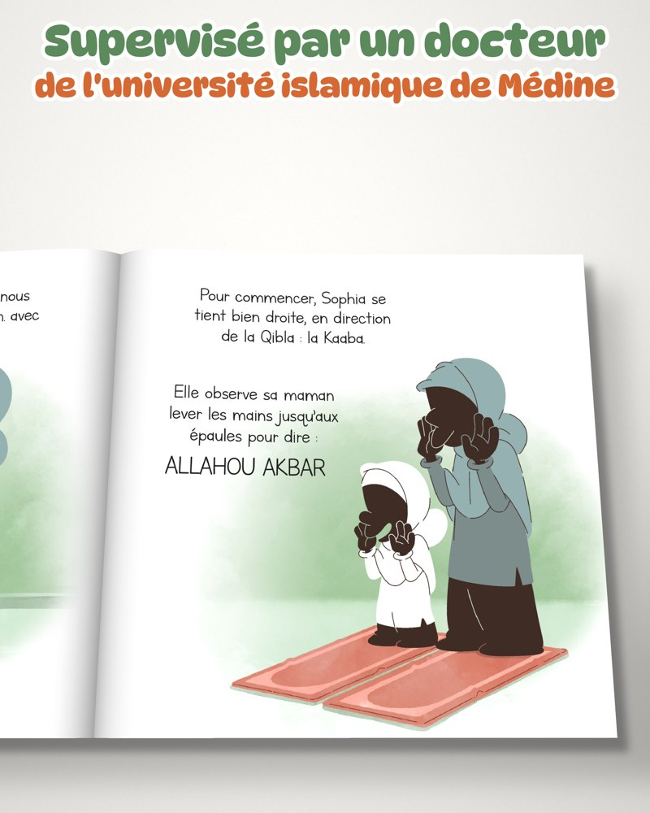

La Prière · Instagram du lancement
Page de relecture pour Norédine. Un seul post dans la grille, le reste en stories. Merci de répondre à Karim : « OK », ou ce qui ne va pas (texte, image, page du livre). Rien n'est publié avant son accord.
1 · Les faits sur le livre
Chaque phrase sera dite sur Instagram. Est-elle exacte, telle qu'elle est dans le livre ?
- Deux versions, garçon et fille : Adam et son papa, ou Sophia et sa maman. Même histoire, le décor et les personnages changent.
- On n'entre pas dans les détails ni dans les règles de la prière : on donne le goût aux enfants, et un support à l'adulte pour leur expliquer, leur raconter.
- Âge : à partir de 3 ans. La suite, La Salat et les ablutions, c'est à partir de 8 ans.
- Crédits : texte Norédine Allam · relecture Dr Salim Mchich (docteur de l'université islamique de Médine) · illustrations Alie, Iqbal, Arya.
2 · Le post unique · jeudi 26/11 à midi · carrousel de 9 images









Ordre : 1 à 9. Légende :
chers jeunes parents, chers tontons, chères tatas... ce livre est pour vous : )
« la prière », un livre illustré pour éveiller les plus petits à l'islam. on n'y entre pas dans les règles : on donne le goût aux enfants, et à vous, un support pour leur raconter.
deux versions : adam et son papa, ou sophia et sa maman. même histoire, mais le décor et les personnages changent pour toucher encore mieux le cœur de l'enfant.
à partir de 3 ans. le lien est en bio.
#islam #salat #famillemusulmane #foi #bdouin
3 · Les stories (4 en tout, sur 3 jours)
- jeu 26/11 · J0 : Story de lancement : le visuel « Nouveau en librairie ». Lien vers la catégorie tout-petits.
- dim 29/11 · story 1 sur 2 : Version garçon (Adam et son papa). Lien vers la fiche garçon.
- dim 29/11 · story 2 sur 2 : Version fille (Sophia et sa maman), juste après la précédente. Lien vers la fiche fille.
- jeu 10/12 : Supervisé par un docteur de l'université islamique de Médine.